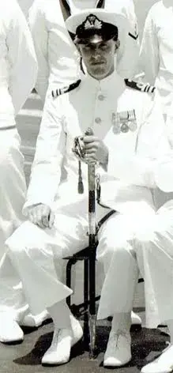

{kind=link}
Commission Legs
The Lads
Messdecks
Ashore
Crossing The Line
Aircraft Accidents
Suez Canal
Beira Patrol
Reunions
In Memoriam
THE SKIPPER
CAPTAIN L D EMPSON
(later to become Admiral Sir Derek Empson GBE KCB)

Born 29th October 1918, Derek Empson joined the Royal Navy in 1940 as Naval Airman 2nd Class. Derek Empson was commissioned as a Sub Lieutenant(A) RNVR on obtaining his pilots wings on 18th November 1940.
He flew with 814, 782, 813 Squadrons and was Lt Cdr (Flying) HMS Vengeance. Commanded 767 NAS and was Commander (Air) RNAS Hal Far, Malta.
When promoted to Captain in 1957 he served as Naval Assistant to 1SL and was appointed Captain (Air) Flag Officer Air (Home).
When appointed to become our skipper on HMS Eagle on 3 December 1963, the then Capt Empson was the first former RNVR(A) Officer to command a Fleet Carrier.
On the 7th January 1967 our old skipper Captain L.D. Empson RN was
promoted to Rear Admiral and appointed Flag Officer Aircraft
Carriers (1967-69)
and became the first former RNVR(A)
Officer to be promoted to Flag rank.
BUT our old skipper had not finished there, he went on to
become:
Flag Officer Carriers and Amphibious Ships and
was also Commander Far East Fleet (1969-71)
Second Sea
Lord (1971-74).
In 1974 he achieved another first when he was appointed Commander-in-Chief Naval Home Command (1974-75), becoming the first RNVR(A) Officer to be promoted to 4-Star rank and, of course, the first lower deck guy to make it all the way to the top.
Admiral Sir Derek Empson GBE KCB retired in February 1976. Sadly he crossed the bar on 20th September 1997. A gentleman and a great skipper, rest in peace sir, your watch is over, job well done.
THE S.C.O.
LT CDR GILCHRIST

The now retired Cdr Gilchrist very kindly provided an introduction to our Eagle pages for us."I am very pleased to write this introduction."
"I arrived as Signal Officer of Eagle off Aden in January 1966 and left the day after Christmas 1967 from Singapore. I felt happy in Eagle, from the moment I arrived, and found that the whole communications team seemed to be first-class, an opinion I never had to change. Far from having any significant trouble from anyone, I felt really well supported by the whole team and realised that I was very lucky to have such support. This was rammed home to me when I was made operations room officer as well as signal officer during our operational readiness inspection: the team just got on with things, which continued to run very smoothly, and we got an excellent inspection report. The department had to put up with some pretty unusual things, too, including the Beira patrol, and nearly everyone went into an odd form of two watches, which had not been tried before at sea. As usual, people co-operated very well and made a success of what was a complete disruption to their normal lives. We were really at the beginning of the computer age in the department, too, doing things like writing a computer programme to help us pick the right frequencies to avoid interference. This is the sort of thing anyone would do now on his mobile telephone, but it was so advanced then that I remember having to give a talk about it at Mercury later. Altogether, I was very glad � and privileged � to have been in Eagle then".
Cdr Warren Gilchrist RN (Retired)
27th March 2021